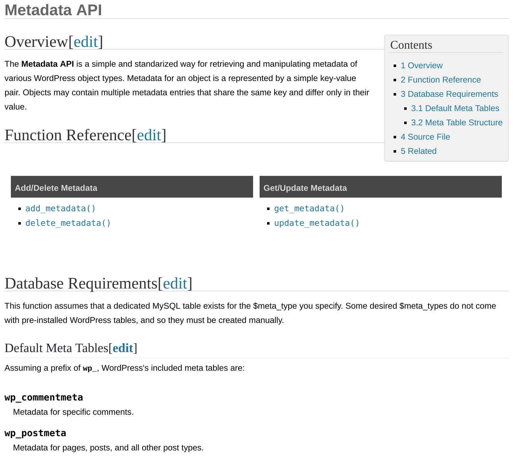
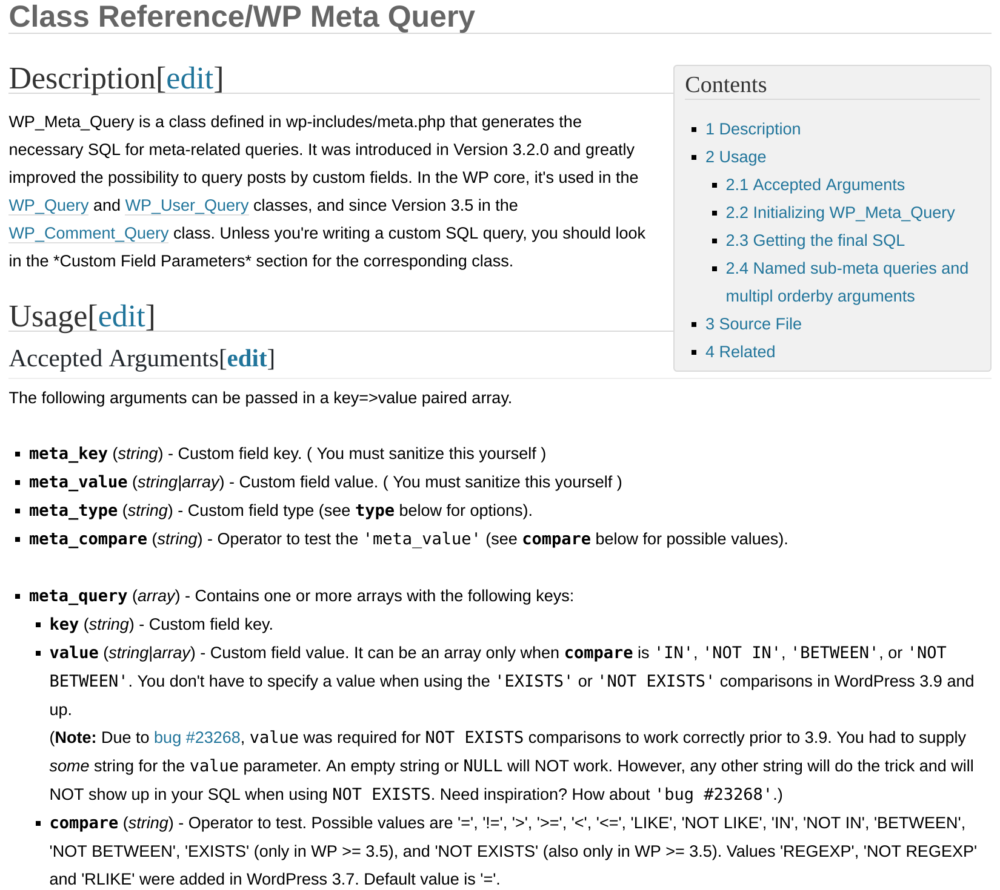

Template tags
https://codex.wordpress.org/Metadata_API
| nazwa | wielkość | ★ | instalacje |
|---|---|---|---|
| Advanced Custom Fields | 1200K | 5★ (961) | 1m+ |
| CMB2 | 800K | 5★ (57) | 100k+ |
| Custom Field Suite | 290K | 5★ (117) | 30k+ |
| Pods | 1300K | 5★ (164) | 40k+ |
| Simple Fields | 500K | 5★ (41) | 10k+ |
| Toolset Types | 8200K | ★ 4.5 (208) | 200k+ |
| "custom fileds" => 380 wtyczek | |||
zalety
wady
zalety
wady
https://codex.wordpress.org/Class_Reference/WP_Meta_Query
